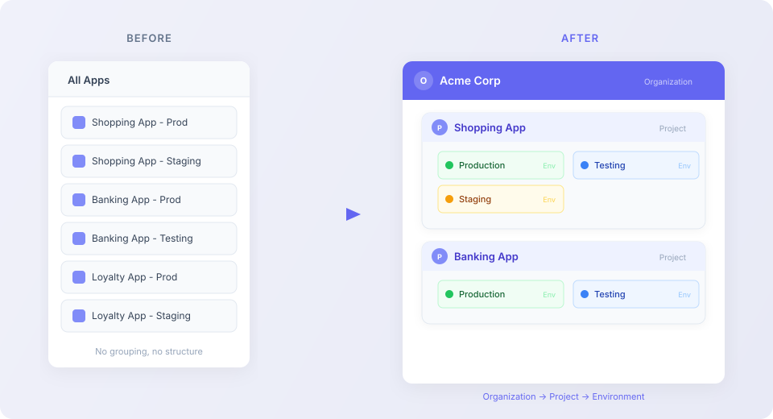

Structural model shift: flat list → three-level hierarchy
Transforming a flat organizational model into a structured three-level hierarchy to support scale and clarity.

Overview
UXCam's data organization started as a simple flat list of apps. As customers grew and managed more products, this model broke down. This project introduced a three-level hierarchy — organization, project, environment — that gave teams the structure they needed to work at scale.
Problem
The flat list model created increasing friction as teams scaled:
- Enterprise customers with dozens of apps couldn't organize or find what they needed
- No separation between production and staging environments
- Permission management was all-or-nothing at the account level
- The navigation model didn't reflect how teams actually organized their work
Process
This was a foundational change that touched nearly every surface of the product. I worked closely with the product and engineering teams to understand the technical constraints, mapped the impact across all affected features, and designed the migration experience for existing users.
We ran extensive concept testing to validate the hierarchy model with customers of different sizes before committing to the architecture.
Solution
The three-level hierarchy (organization → project → environment) gave teams a natural way to organize their apps. The navigation was redesigned with a persistent project/environment switcher, and permissions were granularized to each level. The migration path was designed to be automatic for existing users while giving them the option to restructure.
Outcome
The structural shift unlocked enterprise adoption, simplified multi-app management, and established a scalable architecture that supports UXCam's growth. Customer feedback confirmed the hierarchy matched their existing mental models.